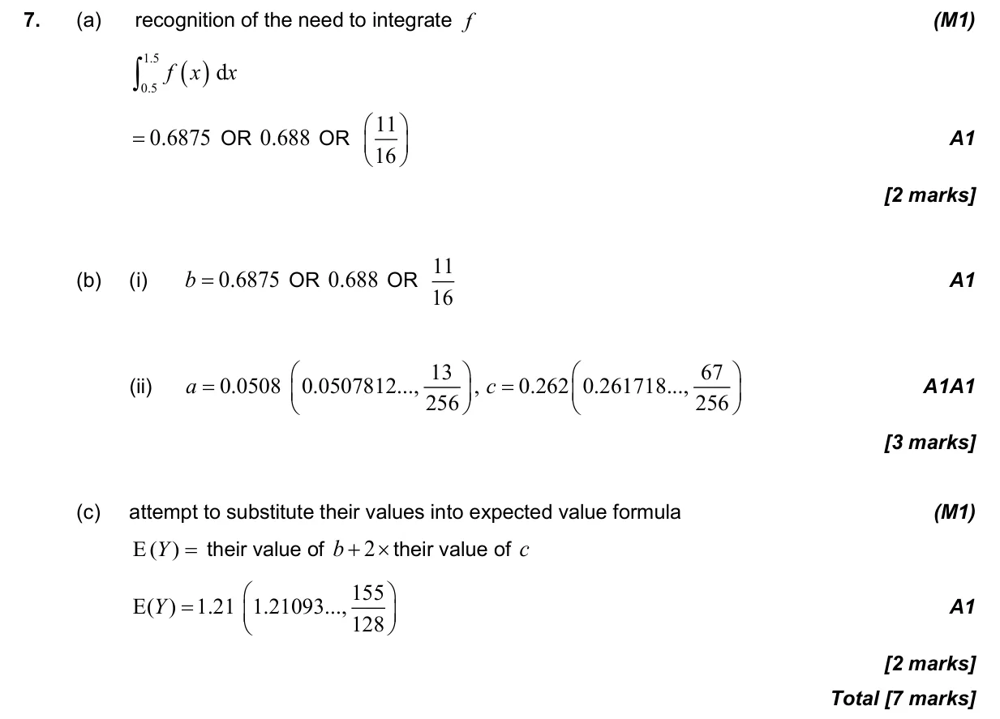

4.14 Discrete and continuous random variables: pdfs, mean, variance, median and mode4.7 Discrete random variables
Question

Markscheme

7 marks - May P2 TZ3 - Section A - Mathematics: Analysis and Approaches HL
